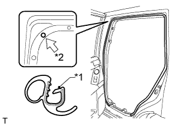

ПРИЕМНИК СИСТЕМЫ БЛОКИРОВКИ ДВЕРЕЙ (для 5-дверных моделей) > УСТАНОВКА |
| 1. УСТАНОВИТЕ ПРИЕМНИК СИСТЕМЫ ДИСТАНЦИОННОЙ БЛОКИРОВКИ ДВЕРЕЙ |
Установите приемник и закрепите его болтом.
Подсоедините разъем.
| 2. УСТАНОВИТЕ ЛЕВУЮ ЗАДНЮЮ ОБЛИЦОВОЧНУЮ ПАНЕЛЬ ЗАДНЕЙ БОКОВОЙ ЧАСТИ КУЗОВА В СБОРЕ |
Для моделей с задним сиденьем № 2:
Введите в зацепление 4 фиксатора и 2 направляющие и пропустите напольное крепление ремня безопасности заднего сиденья № 2 через заднюю боковую облицовочную панель.
Введите в зацепление 7 фиксаторов и 2 направляющие, чтобы закрепить заднюю боковую облицовочную панель.
| 3. УСТАНОВИТЕ ЛЕВУЮ БОКОВУЮ ОБЛИЦОВОЧНУЮ ПАНЕЛЬ ПОЛКИ БАГАЖНОГО ОТДЕЛЕНИЯ В СБОРЕ |
Для моделей без заднего сиденья № 2:
Пропустите опору рычага фиксации спинки заднего сиденья через боковую облицовочную панель полки багажного отделения.
Установите боковую облицовочную панель полки багажного отделения, закрепив ее 5 фиксаторами и 8 захватами.
Вверните 4 болта и 2 винта.
Введите в зацепление 6 захватов и 2 направляющих, чтобы установить опору рычага фиксации спинки заднего сиденья на боковую облицовочную панель полки багажного отделения.
Установите напольное крепление ремня безопасности заднего сиденья № 1 и закрепите его болтом.
Для моделей с задним сиденьем № 2:
Установите боковую облицовочную панель полки багажного отделения, закрепив ее 4 фиксаторами и 8 захватами.
Вверните 2 болта и 2 винта.
Установите напольное крепление ремня безопасности заднего сиденья № 2 и закрепите его болтом.
Установите напольное крепление ремня безопасности заднего сиденья № 1 и закрепите его болтом.
| 4. УСТАНОВИТЕ ВЕРХНИЙ ПОРУЧЕНЬ В СБОРЕ (для моделей с задним сиденьем № 2) |
Установите верхний поручень и закрепите его 2 болтами.
| 5. УСТАНОВИТЕ ЗАГЛУШКУ ВЕРХНЕГО ПОРУЧНЯ (для моделей с задним сиденьем № 2) |
Введите в зацепление 2 захвата и установите заглушку верхнего поручня.
| 6. УСТАНОВИТЕ ПЕРЕДНЮЮ БОКОВУЮ ОБЛИЦОВОЧНУЮ НАКЛАДКУ БАГАЖНОГО ОТДЕЛЕНИЯ (для моделей с задней крышкой) |
Введите в зацепление 2 захвата, чтобы закрепить переднюю боковую облицовочную накладку полки багажного отделения
| 7. УСТАНОВИТЕ КОЛПАЧОК КРЕПЛЕНИЯ ЗАДНЕЙ КРЫШКИ № 1 (для моделей без задней крышки) |
Введите в зацепление 2 захвата, чтобы закрепить колпачок крепления задней крышки № 1.
| 8. УСТАНОВИТЕ ЗАЩЕЛКУ ОБЛИЦОВКИ БАГАЖНОГО ОТДЕЛЕНИЯ № 1 |
Установите защелку облицовочной панели багажного отделения № 1, повернув ее по часовой стрелке.
| 9. УСТАНОВИТЕ НАКЛАДКУ КРЕПЛЕНИЯ ПОЯСНОГО РЕМНЯ БЕЗОПАСНОСТИ ЗАДНЕГО СИДЕНЬЯ № 1 |
Введите в зацепление 3 захвата, чтобы установить накладку крепления поясного ремня безопасности заднего сиденья № 1.
| 10. УСТАНОВИТЕ ЗАДНИЙ НАПОЛЬНЫЙ КОВРИК В СБОРЕ (для моделей без заднего сиденья № 2) |
Введите в зацепление 4 захвата, чтобы установить задний напольный коврик.

| *A | для моделей без направляющей полки багажного отделения | *B | для моделей с направляющей полки багажного отделения |
| *C | Для сидений с противоположным расположением | - | - |
| 11. УСТАНОВИТЕ ЛЕВУЮ БОКОВУЮ НАПРАВЛЯЮЩУЮ ПОЛА (для моделей с направляющей полки багажного отделения) |
Установите боковую направляющую пола, закрепив ее 3 болтами.
| 12. УСТАНОВИТЕ ПРАВУЮ БОКОВУЮ НАПРАВЛЯЮЩУЮ ПОЛА (для моделей с направляющей полки багажного отделения) |
| 13. УСТАНОВИТЕ ЗАДНЮЮ ОПОРНУЮ ПАНЕЛЬ КОВРИКА ЗАДНЕГО ПОЛА (для моделей без заднего сиденья № 2) |
Введите в зацепление 5 фиксаторов и 4 захвата, чтобы установить заднюю опорную пластину коврика заднего пола.
| 14. УСТАНОВИТЕ ПАНЕЛЬ ПОЛКИ БАГАЖНОГО ОТДЕЛЕНИЯ № 1 В СБОРЕ (для моделей без заднего сиденья № 2) |
Установите панель полки багажного отделения № 1, закрепив ее фиксатором.
| 15. УСТАНОВИТЕ ПЕРЕДНЮЮ ОБЛИЦОВОЧНУЮ НАКЛАДКУ БАГАЖНОГО ОТДЕЛЕНИЯ (для моделей без заднего сиденья № 2) |
 |
Установите защелку ремня для удержания багажа и переднюю облицовочную накладку багажного отделения и закрепите их болтом.
| *1 | Защелка ремня для удержания багажа |
Введите в зацепление 4 захвата для установки колпачка.
| 16. УСТАНОВИТЕ ЗАДНЮЮ КРЫШКУ В СБОРЕ (для моделей с задней крышкой) |
Установите заднюю крышку.
| 17. УСТАНОВИТЕ УПЛОТНИТЕЛЬ ПРОЕМА ЗАДНЕЙ ЛЕВОЙ ДВЕРИ |
|  |
Совместите нанесенную краской отметку на уплотнителе обшивки проема задней двери с отмеченным положением на автомобиле и установите уплотнитель обшивки проема задней двери, как показано на рисунке.
| *1 | Метка, нанесенная краской |
| *2 | Положение метки |
| 18. УСТАНОВИТЕ ОПОРНУЮ НАКЛАДКУ ЛЕВОЙ ЗАДНЕЙ ДВЕРИ |
Введите в зацепление 3 фиксатора, 6 захватов и 2 направляющие, чтобы установить опорную накладку задней двери.
| 19. УСТАНОВИТЕ ЛЕВУЮ ЗАДНЮЮ БОКОВУЮ ОПОРНУЮ НАКЛАДКУ (для моделей с задним сиденьем № 2) |
Установите заднюю боковую опорную накладку и закрепите ее 2 болтами.
| 20. УСТАНОВИТЕ ЗАДНЮЮ НАКЛАДКУ ПОРОГА ПОЛА № 1 (для моделей с задним сиденьем № 2) |
Введите в зацепление 2 захвата, чтобы установить заднюю накладку порога пола № 1.
| 21. УСТАНОВИТЕ СПИНКУ ЗАДНЕГО СИДЕНЬЯ № 1 В СБОРЕ (для моделей с задним сиденьем № 1) |
Для складываемого вдвое раздельного сиденья 60/40 с левой стороны:
Установите спинку заднего сиденья № 1 в сборе (Нажмите здесь).
Для складываемого вдвое раздельного сиденья 60/40 с правой стороны:
Установите спинку заднего сиденья № 1 в сборе (Нажмите здесь).
| 22. УСТАНОВИТЕ ЗАДНЕЕ СИДЕНЬЕ № 1 В СБОРЕ (для моделей с задним сиденьем № 1) |
Для выдвижного раздельного сиденья 60/40 с функцией облегчения посадки с левой стороны:
Установите заднее сиденье № 1 в сборе (Нажмите здесь).
Для выдвижного раздельного сиденья 60/40 с функцией облегчения посадки с правой стороны:
Установите заднее сиденье № 1 в сборе (Нажмите здесь).
| 23. УСТАНОВИТЕ ЗАДНЕЕ СИДЕНЬЕ № 2 В СБОРЕ (для моделей с задним сиденьем № 2) |
Для сидений с ручным приводом:
Установите заднее сиденье № 2 в сборе (Нажмите здесь).
Для сидений с электроприводом:
Установите заднее сиденье № 2 в сборе (Нажмите здесь).
Для моделей с противоположно расположенными сиденьями:
Установите заднее сиденье № 2 в сборе (Нажмите здесь).
| 24. ПОДСОЕДИНИТЕ ПРОВОД К ОТРИЦАТЕЛЬНОМУ ВЫВОДУ АККУМУЛЯТОРНОЙ БАТАРЕИ |